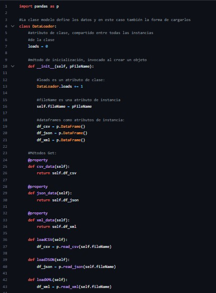
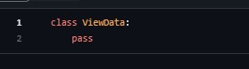
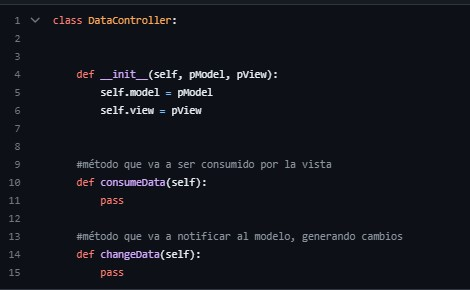
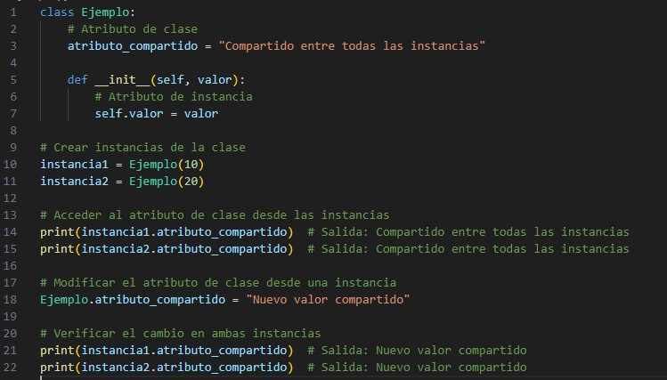

En este corte se dio a explicar a fondo que era MVC este es un patrón de arquitectura de software que, utilizando 3 componentes (Modelos, Vistas y Controladores) separa la lógica de la aplicación de la lógica de la vista en una aplicación. El modelo, la vista y el controlador
  Cuando se crea una instancia de una clase, se puede acceder al atributo de clase desde cualquier instancia, y si se modifica en una instancia, el cambio se reflejará en todas las demás instancias de la misma clase.
